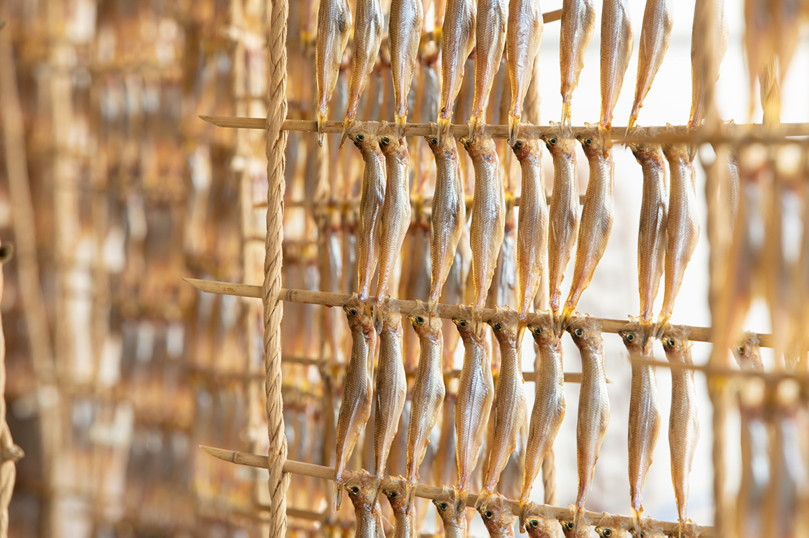
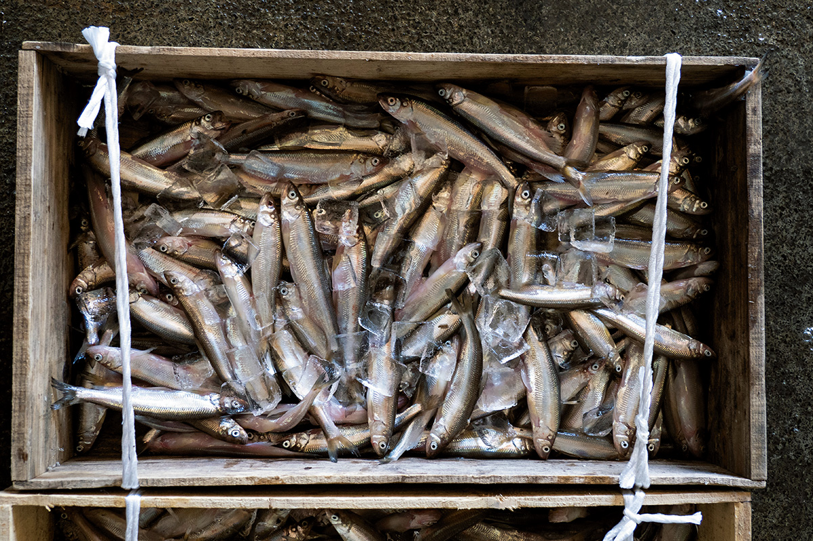
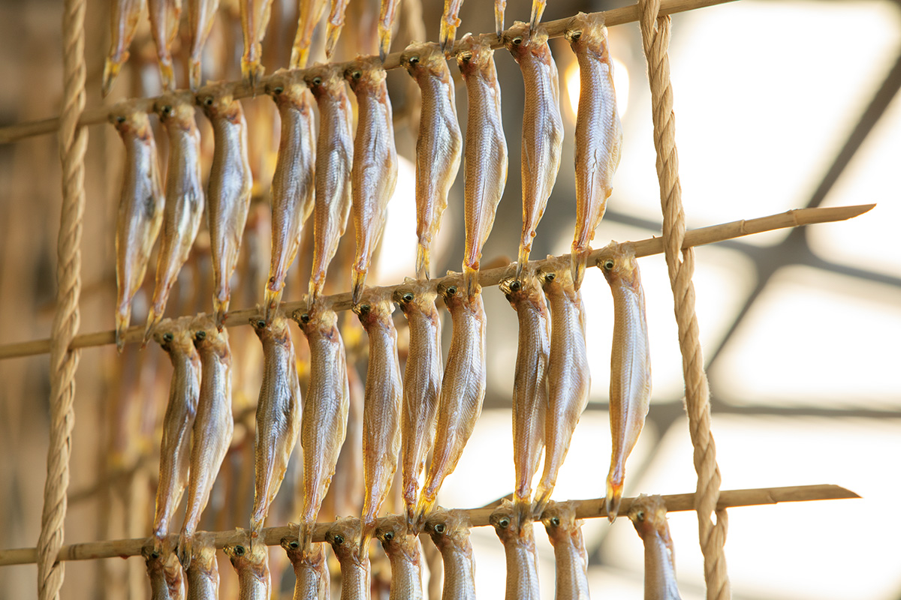
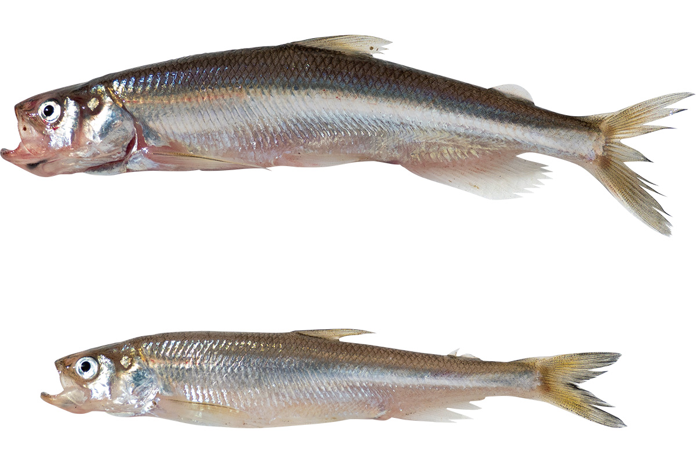
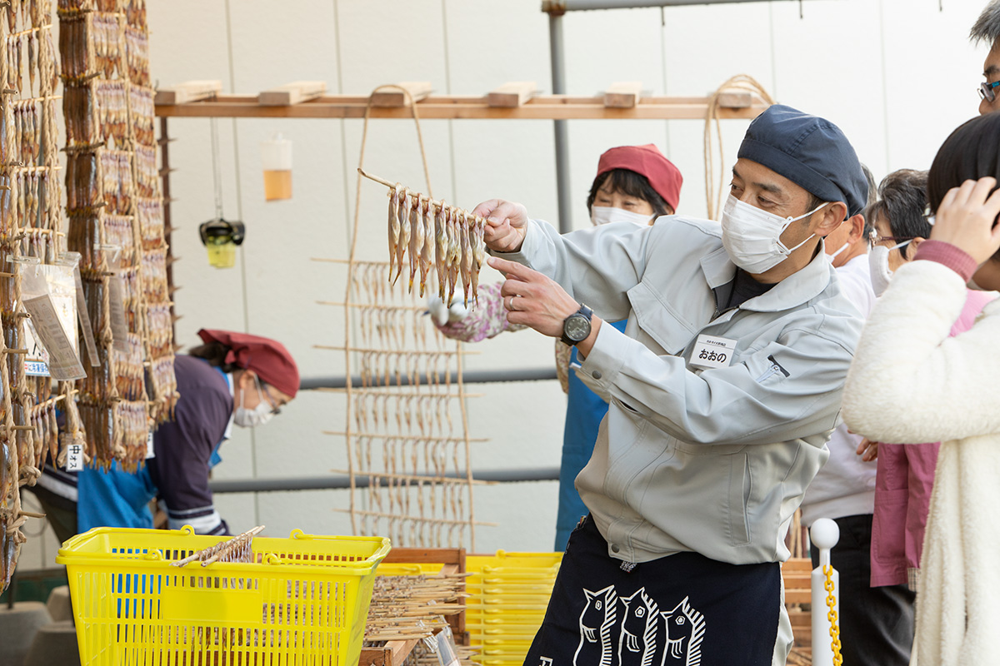
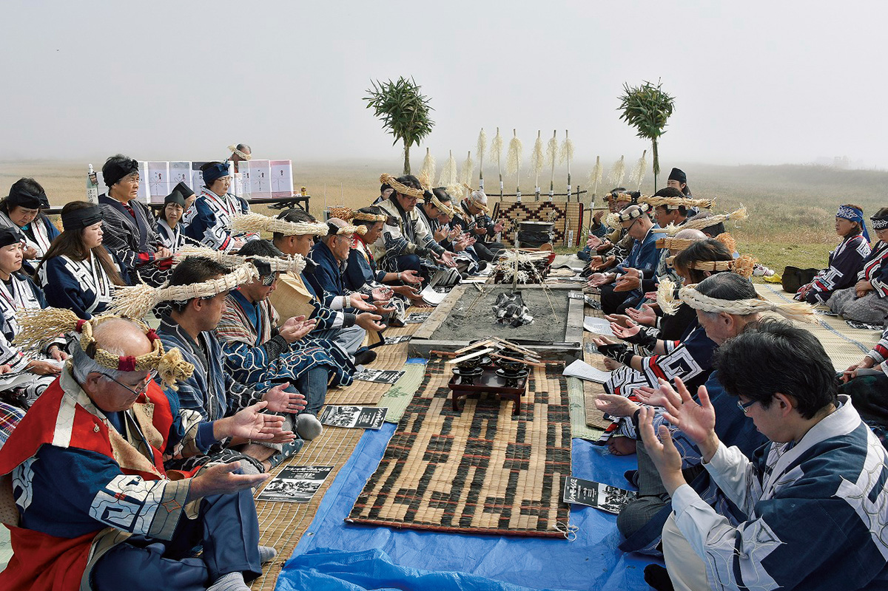
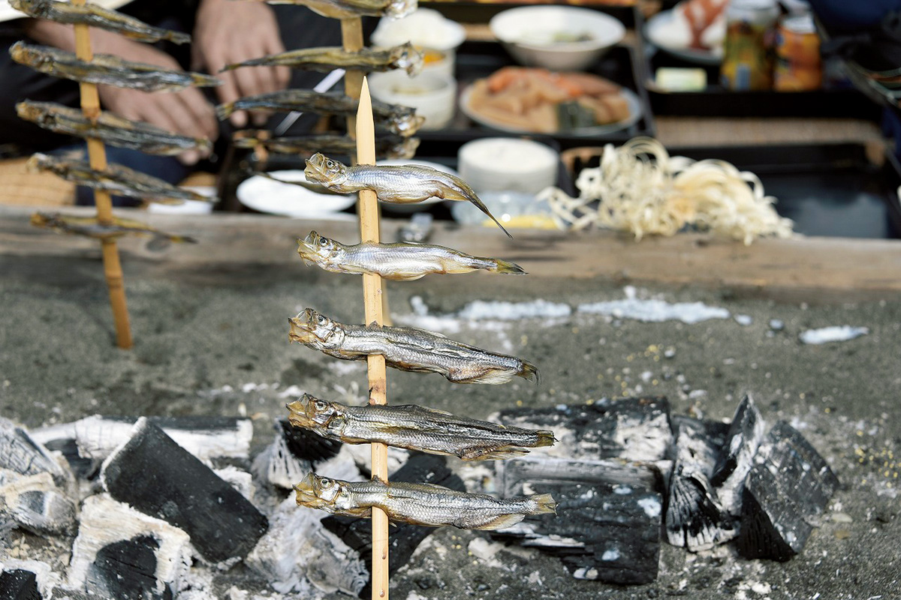
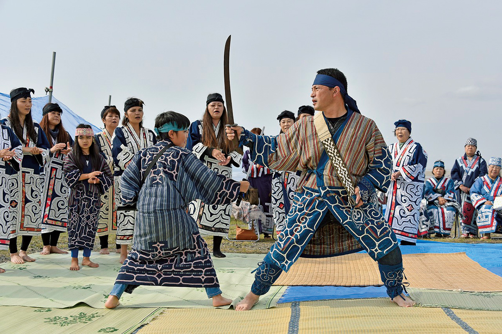
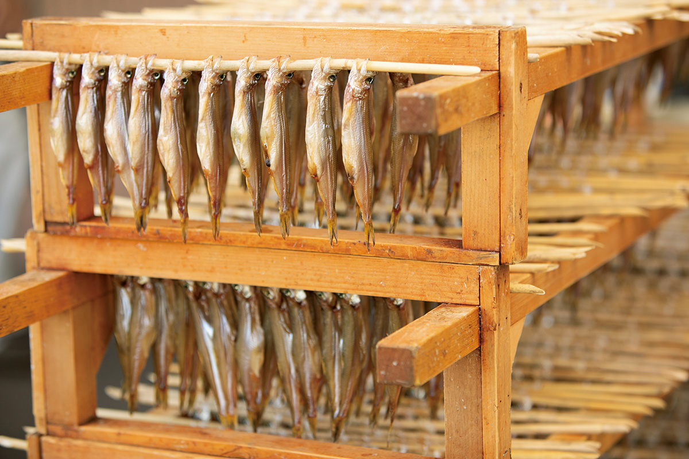
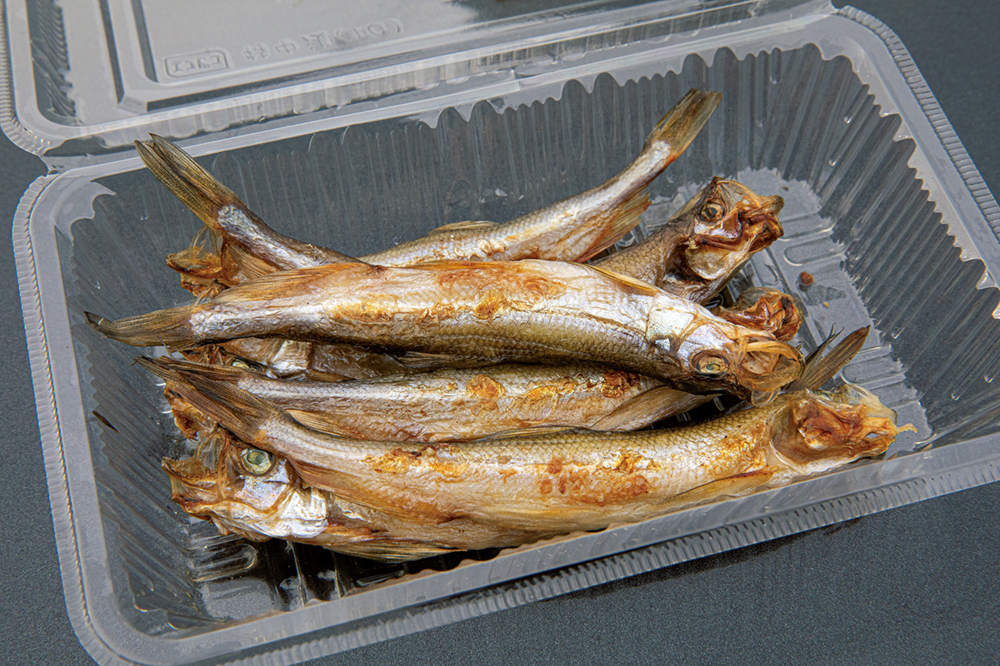

Префектура Хоккайдо · Мукава · еда
Мукава и настоящая сисямо: рыба, которую ловят только у берегов Хоккайдо

Сисямо с икрой продают в любом японском супермаркете, но почти всегда это мойва, совсем другая рыба. Настоящую сисямо ловят только в нескольких местах тихоокеанского побережья Хоккайдо, и одно из главных среди них городок Мукава.
Рыба
Настоящую сисямо мы почти не знаем
Дешёвая «сисямо с икрой», которую подают в закусочных и продают в супермаркетах, на деле мойва. По-японски её так и называют: «карафуто-сисямо», сахалинская сисямо. Настоящая сисямо водится только в Японии, и во всём мире её добывают лишь у части тихоокеанского берега Хоккайдо.

«Сисямо, как и лосось, рождается весной в реке, мальком уходит в море и растёт там, а осенью следующего года возвращается на нерест в родную реку. Мойва в реки не заходит», объясняет один из руководителей рыболовецкого кооператива Мукавы. Сисямо поднимается на нерест в девять рек тихоокеанского побережья Хоккайдо, и река Мукава одна из них. Многое в жизни этой рыбы до сих пор остаётся загадкой.
В 2006 году кооператив зарегистрировал марку «Мукава сисямо»: так называют рыбу, выловленную у Мукавы и по соседству, и вяленую сисямо, приготовленную в округе. Марка помогает отличить её от мойвы, а продаёт рыбу и сам кооператив, в своём магазине «Итиуроко».
Мукава это небольшой городок на тихоокеанском берегу, в устье одноимённой реки. Старейшая лавка, которая вялит и продаёт сисямо, работает здесь с 1923 года: «Канэдай Оно сётэн». Её хозяин смеётся, что с тех пор как марку узнали, в октябре и ноябре, когда идёт лов, гостей в городе становится вдвое больше.
«Самки с икрой крупнее, их все любят. Но местные часто выбирают самцов: они жирнее и вкуснее. В каждой лавке сушат по-своему, и вкус везде разный. Приезжайте в Мукаву и найдите свою сисямо»
хозяин «Канэдай Оно сётэн»

В 2023–2025 годах лов сисямо в Мукаве не открывали: рыбы стало слишком мало. Осенью 2026 года кооператив вышел на пробный лов, чтобы проверить, восстановились ли запасы.
Как узнать
Чем настоящая сисямо отличается от мойвы

Сисямо относится к отряду лососеобразных, к семейству корюшковых. По-английски её называют shishamo smelt или japanese longfin smelt. Длина рыбы обычно от 12 до 18 см. Узнать её можно по нескольким признакам: чешуя крупная и хорошо заметная, спина тёмно-жёлтая, брюхо серебристо-белое, а рот большой и тянется назад дальше глаза.

Айны
Рыба из ивового листа

«По-айнски сисямо называется "сусухам", это значит "ивовый лист". Говорят, когда-то айны Мукавы страдали от голода, и небесный бог, чтобы их спасти, оживил ивовые листья и пустил их по реке. Листья стали рыбой и спасли людей», рассказывает председатель общества, которое хранит айнскую культуру Мукавы.
Сисямо ловили перед самой зимой. Из неё варили сладкую рыбу в соевом соусе, суп с сисямо, а больше всего вялили впрок: на долгую зиму это была очень важная еда.

Обычно айнское «камуй-чэп», «божья рыба», означает лосося, но в Мукаве так называли сисямо, настолько священной она здесь была. Поэтому айны Мукавы с давних времён перед ловом проводили обряд «Сисямо камуй-номи»: благодарили богов и просили богатого улова.
Раньше каждое селение проводило его когда придётся, а с 1992 года общество устраивает праздник каждый октябрь в устье реки Мукава (в 2020 и 2021 годах его отменяли). Всё идёт по старому порядку: у очага сначала молятся божеству огня Апэфути-камуй, потом благодарят бога воды, богов алтаря и других и просят хорошего улова. Когда-то после обряда люди не подходили к устью, чтобы не помешать рыбе идти вверх по реке и не осквернить воду: это был строгий священный ритуал.

В 2022 году «Сисямо камуй-номи» по-прежнему показывал, что для жителей Мукавы сисямо не просто рыба.
Купить
Где взять настоящую сисямо
В Мукаве продают «нама-боси»: сисямо, слегка подвяленную на ветру. В разных лавках её сушат по-разному, так что стоит заглянуть в несколько.
«Канэдай Оно сётэн»: старейшая лавка города

Лавку открыли в 1923 году, и это самый старый в Мукаве магазин, который вялит и продаёт сисямо. Здесь работают только с настоящей рыбой, и именно этим магазин известен. Ищите у входа ряды сушащейся сисямо.

«Канэдай Оно сётэн»
- Адрес
- префектура Хоккайдо, уезд Юфуцу, Мукава, Миюки, 2-42
- Телефон
- +81 145-42-2468
- Часы работы
- 10:00–17:00, в октябре–декабре с 9:00
- Выходные
- воскресенье, в октябре–декабре без выходных
- Сайт
- kanedaioono.com
«Итиуроко»: магазин рыболовецкого кооператива
У рыболовецкого кооператива Мукавы есть собственный магазин. Здесь продают сисямо под маркой «Мукава сисямо».
«Итиуроко», магазин рыболовецкого кооператива Мукавы
- Адрес
- префектура Хоккайдо, уезд Юфуцу, Мукава, Сиоми, 751
Фото: Ёсихито Одзава.